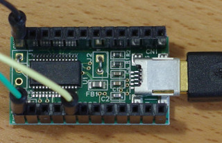

Libopenlpc81x
Libopenlpc81x is a peripheral library for NXP LPC81x microcontrollers. The LPC81x microcontroller family are based on the ARM Cortex-M0+ core.
This library is used with ARM GCC, ARM binutils, and newlib C library. They form a toolchain for the LPC81x.
This package includes a in-system programming utility (usart-util) and some examples.
Files
libopenlpc81x | |-- examples/ --- nxp_lpc/ --- lpc81x/ --- lpc810m021fn8/ | |-- include/ --- nxp_lpc/ --- lpc81x/ | |-- lib/ --- nxp_lpc/ --- lpc81x/ --- ldscripts/ | `-- tools/ --- nxp_lpc/ --- lpc81x/ --- usart-util/
Building libopenlpc81x
You need to install the ARM bare-metal (no OS) toolchain (GNU Tools for ARM Embedded Processors).
To build libopenlpc81x, use the following sequence of commands:
$ git clone https://github.com/tyoshid/libopenlpc81x.git
$ cd libopenlpc81x
$ make
The make step will build the target library (lib/nxp_lpc/lpc81x/liblpc81x.a) and the host utility (tools/nxp_lpc/lpc81x/usart-util/usart-util).
Compiling and Linking
Architecture
"-mthumb -mcpu=cortex-m0plus"
The ARM toolchain supports Cortex-A/R/M architectures. These options specify the ARM Cortex-M0+ core. The ARMv6-M architecture is selected.
Header files
"-Idir"
The LPC81x peripheral header files are placed in include/nxp_lpc/lpc81x.
They refer to the common header files in include.
Library
"-Ldir-llpc81x"
liblpc81x.a is generated in lib/nxp_lpc/lpc81x.
Linker script
"-Tscript-nostartfiles"
The library includes its own startup code (reset handler) and the vector table (lib/nxp_lpc/lpc81x/vector.c).
There are three linker scripts, lpc810.x, lpc811.x, and lpc812.x in lib/nxp_lpc/lpx81x/ldscripts.
The difference between the three is only the size of memory.
The linker issues an error message if the code or (global and static) data size is too large, but it can't detect a too large automatic variable (stack overflow).
Here is an example:
$ arm-none-eabi-gcc -mthumb -mcpu=cortex-m0plus -Ilibopenlpc81x/include -Ilibopenlpc81x/include/nxp_lpc/lpc81x -o test.elf test.c -Llibopenlpc81x/lib/nxp_lpc/lpc81x -llpc81x -T ldscripts/lpc810.x -nostartfiles
Downloading
The LPC81x always starts from the on-chip boot ROM after reset. The boot loader in the boot ROM can execute the ISP command handler or the user application code.
The ISP command handler is executed in the following cases:
- No valid user code is present.
- The ISP entry pin is connected to LOW.
The boot loader verifies the vector table entry 7 (0x0000001c). If it contain the 2's complement of the checksum of the vector table entries 0 through 6, the boot loader judge that a valid user code is present.
The boot loader can automatically determine the baud rate of the serial port (auto-baud).
The data stream is in plain binary format, not in uuencode format.
See "UM10601 LPC81x User manual, Chapter21: LPC81x Boot ROM".
usart-util can download a binary image to the LPC81x using the ISP commands.
It calculates and sets the checksum.
The host serial device can be specified with -d.
You can use a USB to serial module, like this:

It is a FTDI FT232RL module (3.3V I/O).
You can use objcopy to generate a raw binary file:
$ arm-none-eabi-objcopy -O binary test.elf test.bin
Here is an example:
# libopenlpc81x/tools/nxp_lpc/lpc81x/usart-util/usart_util -d /dev/ttyUSB1 -D test.bin
ISP version 13.4
PID 0x8100 LPC810M021FN8
Checksum = 0xeffff9bb
CRP: NONE
wrote 1220 bytes
#
Examples
You can use make to generate the binary file:
$ cd examples/nxp_lpc/lpc81x/lpc810m021fn8/miniblink
$ make -s
miniblink.c
miniblink.elf
text data bss dec hex filename
972 0 4 976 3d0 miniblink.elf
miniblink.bin
miniblink.list
$
You can say make flash to download the binary file.
The environment variable USARTUTIL_DEVICE can be used to specify the host serial device:
$ export USARTUTIL_DEVICE=/dev/ttyUSB1
$ su
Password:
# make -s flash
ISP version 13.4
PID 0x8100 LPC810M021FN8
Checksum = 0xeffff9bb
CRP: NONE
wrote 972 bytes
#
License
Hardware
The hardware is released under the Creative Commons Attribution-ShareAlike 4.0 International License.
See http://creativecommons.org/licenses/by-sa/4.0/.
Software
The software is released under the terms of GNU General Public License (GPL), version 3 or later.
See http://www.gnu.org/licenses/ or COPYING.